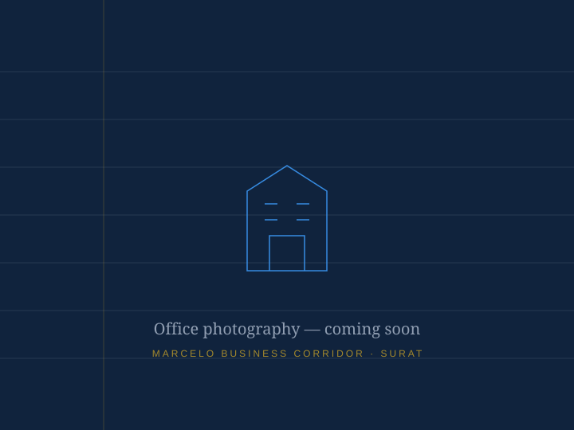

Tax Auditing
Statutory and tax audits conducted with forensic attention — so your filings stand up to any scrutiny, including ours.
Discuss an auditChartered Accountants · Surat
JPM & Co. delivers tax auditing, GST compliance and corporate accounting with the rigour your balance sheet deserves.
What we do
Three disciplines, one standard: every figure verified, every filing on time.
Statutory and tax audits conducted with forensic attention — so your filings stand up to any scrutiny, including ours.
Discuss an auditRegistrations, returns, reconciliations and notices — handled end-to-end so GST never interrupts your business rhythm.
Get compliantFrom day-to-day books to board-ready statements — accounting that gives decision-makers numbers they can act on.
Strengthen your booksWhy JPM & Co.
ICAI Registered
GST Practitioner
The firm
JPM & Co. is a Surat-based chartered accountancy practice serving businesses and professionals who expect their advisors to be as exacting as they are.
We keep our client roster deliberately focused. Fewer engagements, deeper attention — every file reviewed by a partner, every deadline tracked to the day.

Start a conversation